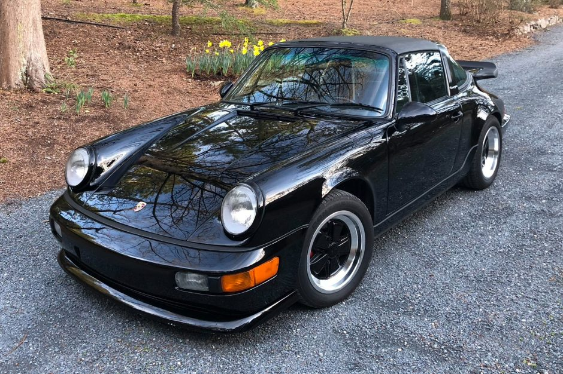
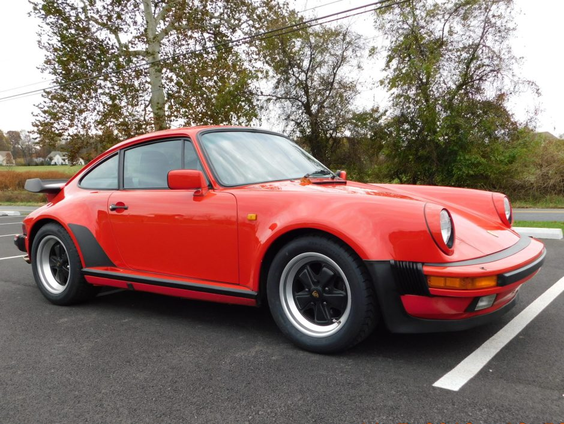
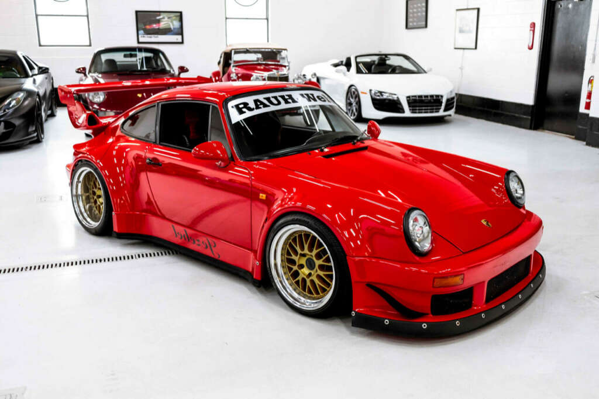
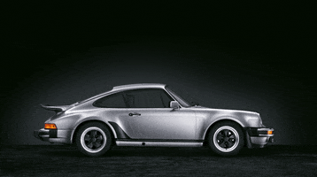

O icônico Porsche 911
Abaixo iremos contemplar alguns modelos do icônico Porsche 911 em seu esplendor durante a década de 1980.
Porsche 911 Targa

Porsche 911 targa 1985
Porshe 911 turbo

Porshe 911 turbo
Porsche 911 RWB

Porsche 911 RWB
As diferentes gerações

As diferentes gerações do 911
O que vimos:
- Porsche 911 Targa
- Porsche 911 targa 1985
- Porsche 911 RWB
- As diferentes gerações do 911